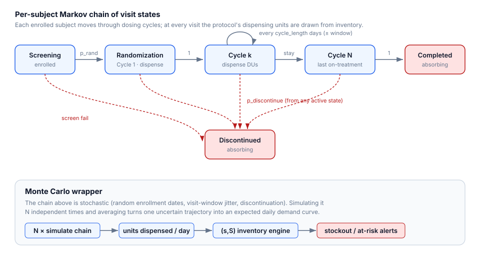
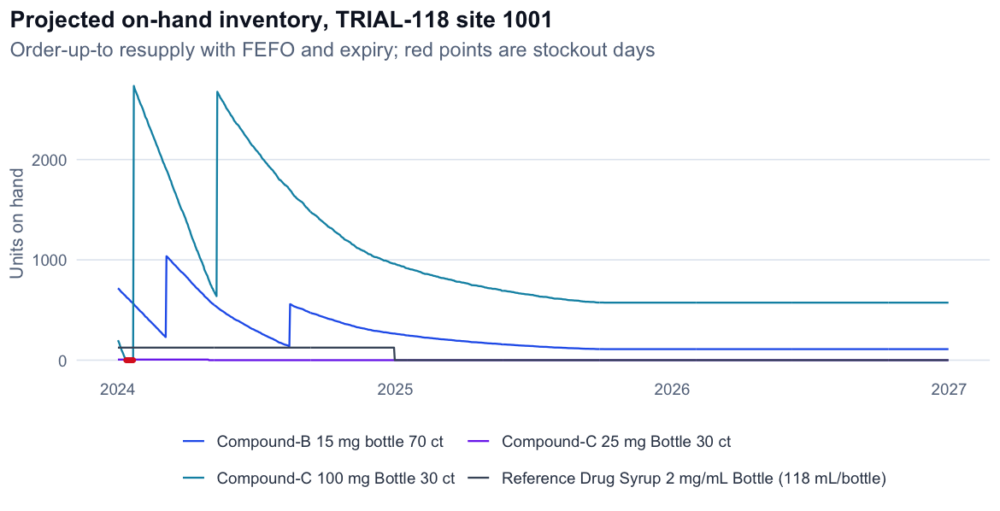
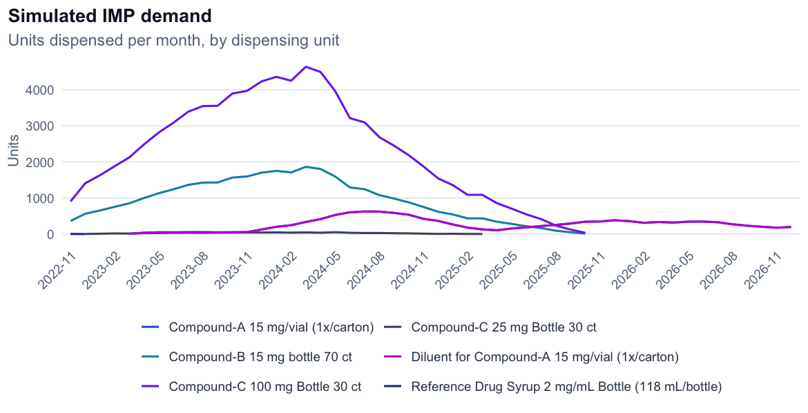

A Monte-Carlo simulator that models patient demand as a Markov chain, projects investigational-drug (IMP) inventory at every site and depot, and flags stockouts weeks ahead.
Running out of investigational drug at a site stalls a trial: patients miss doses and visits slip. But demand is stochastic — patients enroll at random times, move through dosing cycles at their own pace, and sometimes discontinue — while supply fights lot expiry, shipping lead times, and depot limits. This tool models both sides end-to-end so problems are visible in advance.
Every clinical site, coloured by its worst IMP status. Hover for min days-of-supply and the projected stockout date. Red = stockout, amber = at risk, green = healthy.
Rendered from a real 5-trial Monte-Carlo run over the two sample studies.
A Markov chain describes one patient's path through dosing cycles; a Monte-Carlo loop runs it across all patients many times to get an expected daily-demand curve, which drives an (s, S) inventory engine with FEFO consumption, lot expiry, and depot resupply.

Monte-Carlo enrollment → per-patient Markov dosing chain → units dispensed per site/DU/day.
Day-by-day (s,S) policy with FEFO, lot expiry, safety stock, lead times, and depot resupply.
Every site × dispensing-unit tagged OK / AT RISK / STOCKOUT with the exact first-stockout date.
Interactive world map; click a site for its per-DU detail and inventory-over-time chart.
KPI rollup across every study and site at once — nothing hides.
Live, risk-tagged headlines (strikes, recalls, cold-chain) next to your projections.


Left: projected on-hand inventory with resupply cycles; red points are stockout days. Right: simulated monthly demand by dispensing unit.
The full interactive Shiny app runs locally in one command:
R -e "shiny::runApp('.', launch.browser = TRUE)"
Or headless across all protocols:
Rscript scripts/run_simulation.R 5 2026-12-31 2024-01-01
This page is a static showcase; the live server app runs from the repository. All sample data is synthetic.